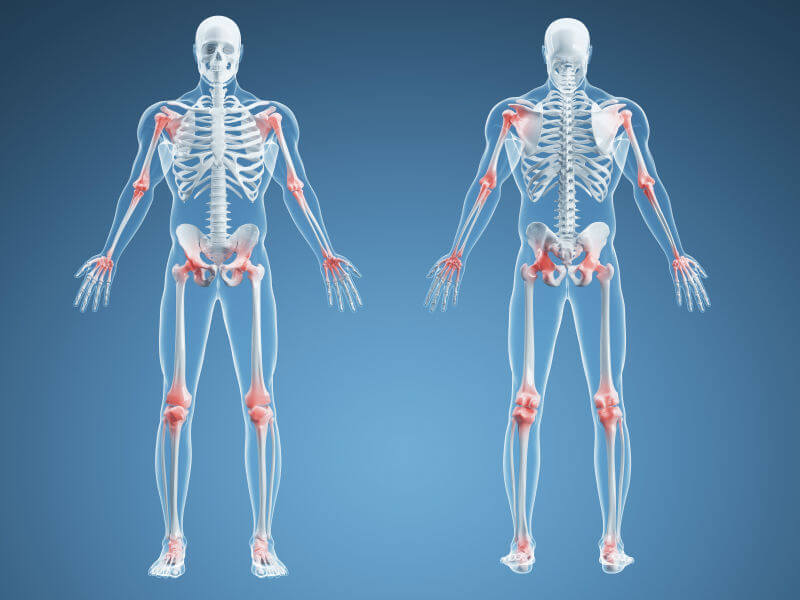
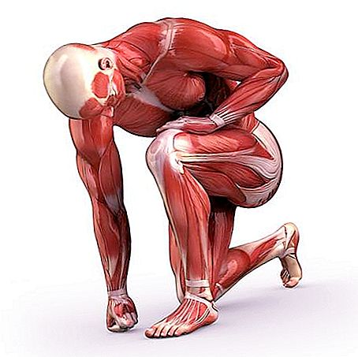

1. Что служит опорой организма человека?
2. Опорно-двигательный аппарат человека состоит из...
3. Скелет человека состоит из...
4. В каком вазрасте начинают формироваться мышцы и кости?

5. Кости конечностей соединены...
6. В каком возрасте в основном развиваются мышцы и кости?
7. Что защищает от повреждения внутренние органы?
8. К замедлению роста организма человека приводит...
9. Что выполняет двигательную функцию организма человека при занятиях физической культурой?
10. Мускулатура спортсмена может составлять 50% тела?
11. В каком возрасте начинается окостенение скелета у девочек?
12. В каком возрасте начинается окостенение скелета у мальчиков?
13. Гипертрофия мышц это...
14. В каком возрасте отмечается резкое увеличение массы мышц у мальчиков?

15. После длительного выполнения физического упражнения мышцы теряют работоспособность и наступает...